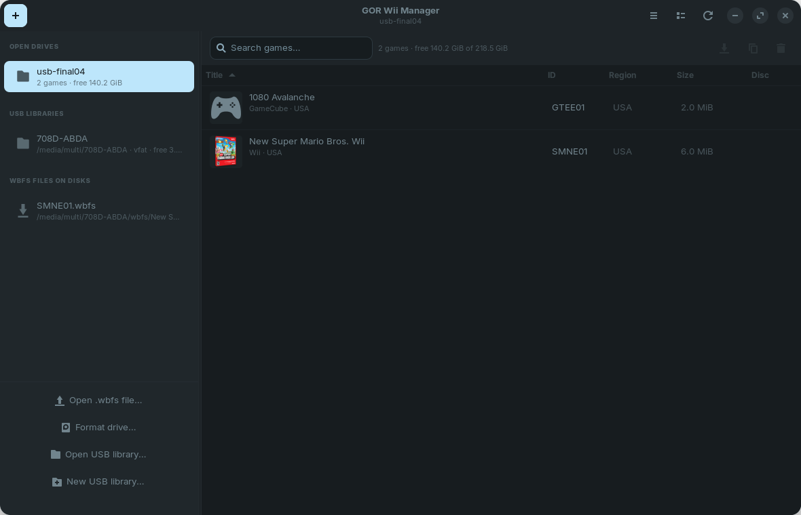
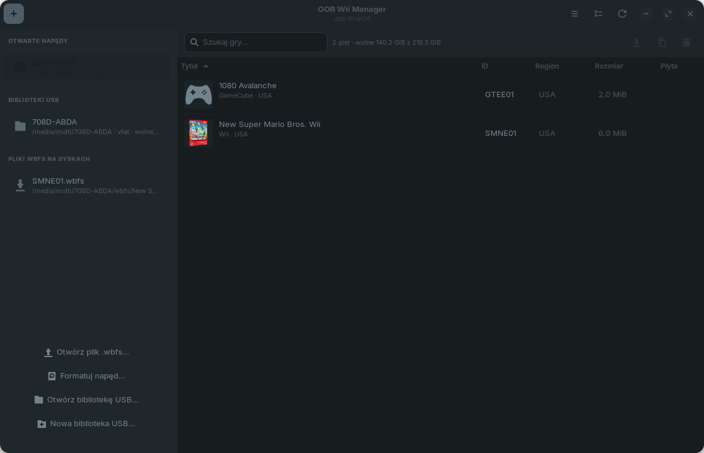

◈
WBFS drives
Open .wbfs files, raw partitions and split .wbfs/.wbf1 sets. Format new files or devices with polkit authorization.
A native Linux manager for Wii and GameCube game backups. WBFS drives, USB Loader GX folder libraries and RVZ import — without Wine or Dolphin.

From a raw WBFS partition to a folder library that USB Loader GX understands — with a single, consistent interface.
Open .wbfs files, raw partitions and split .wbfs/.wbf1 sets. Format new files or devices with polkit authorization.
Decode Zstd, LZMA, LZMA2, BZip2 and raw RVZ groups, including Wii hash reconstruction and AES-128. No Dolphin required.
A folder with wbfs/ and games/ opens like a normal drive. Each game becomes wbfs/Title [ID]/ID.wbfs; GameCube uses Nintendont games/Title [ID]/game.iso.
Copying an already scrubbed game preserves its block map. A 368 MB game stays about 368 MB instead of expanding to the full partition.
Check WBFS consistency, detect duplicate or invalid blocks and rebuild the free-block table from the game entries.
GameTDB/WiiTDB titles and covers are cached locally, so the library stays readable offline. Choose the title language in Preferences.
Long imports, exports and copies show progress, speed, ETA and a cancel button. Work continues in the background.
The interface is in English by default. Switch to Polish in Preferences → Interface language; the change applies immediately.

Download the latest package from GitHub Releases, then:
sudo apt install ./gor-wii-manager_0.6.0_all.debRequires GTK 4, libadwaita, python3-gi, python3-cryptography, libzstd1, udisks2 and pkexec.
git clone https://github.com/multicolor-rgb/GOR_WII_Manager.git
cd GOR_WII_Manager
make test
PYTHONPATH=src python3 -m gor_wii_manager
Build a package with make deb. The CLI is available as
gor-wii-manager after installation.